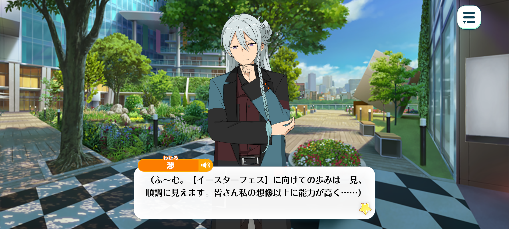
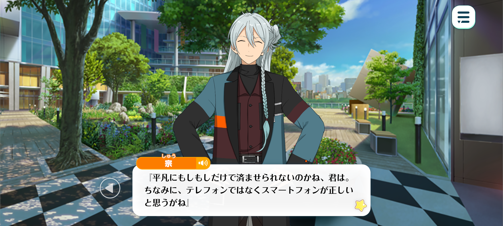
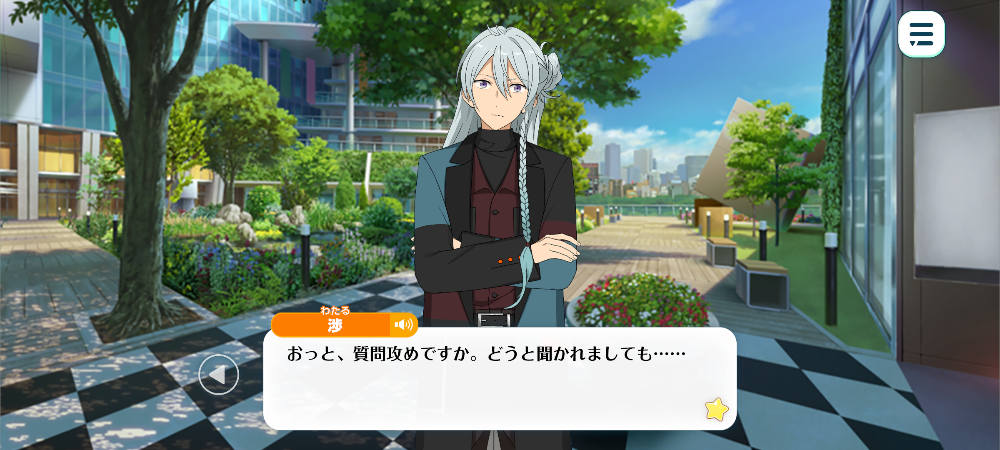
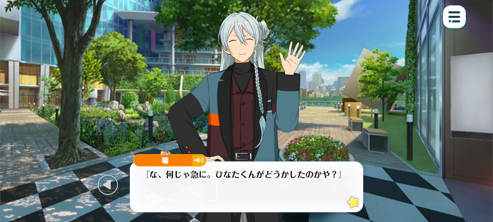

Easter To You
⌒Heartful 2⌒



Wataru: (Hmm~. It seems preparations for Easter Fes are progressing wonderfully. Everyone's abilities have already surpassed even my expectations…)
(These are the very things I wish to accomplish, the things I wish to teach them. One by one, I shall see each of these goals through.)
(Everyone seems perfectly capable of standing strong, even in the face of adversity… And yet, why? Why can’t I quite put this feeling of unease into words?)
(I am living up to all my kohai's expectations. And yet, surely, I should be able to bring even more happiness to everyone.)
…Is it really alright to leave things as they are?
If I continue meeting everyone's expectations, won't they only come to expect more and more of me? And won't that mean I'll have to work harder and harder to keep up? Is it so unreasonable for me to feel this way?
…
(I want to give them everything they ask for. I want to do even more for them. If they seek guidance, then I wish to be the one to provide it.)
(And yet, the joy I feel from being admired by everyone is becoming something of an obstacle. I can no longer seem to find the balance between embracing this role and knowing when to step away.)
(There are other concerns, too. Can this really be called a shuffle unit when someone as ordinary as myself is the one giving everyone guidance…? Or something along those lines.)
(I am the senior, and everyone else is my kohai. Is that simply how these shuffle units work?)
—Ahh, this simply won't do! It's almost as though Hibiki Wataru himself has begun to waver in his chosen role!
But I mustn't dwell on such feelings! I should want to fulfil my role as their senior!
…Fufufu. How utterly ridiculous. I am surrounded by smiling faces, each filled with admiration and a genuine desire for my guidance. I cannot possibly voice even a single complaint… Really, I'm making a fuss over nothing.
It seems that playing the part of a senior who readily gives in to those innocent, pleading looks is no easy feat.
—Oh? What an unexpected person to hear from.
Good day! Thank you for calling Wataru’s telephone ☆
It must still be quite early where you are. My, Shu, are you always such an early riser? ♪

Shu: A simple “hello” would suffice, you know. And incidentally, I believe the correct term is "smartphone", not "telephone".
Wataru: My apologies, but the word “simple" does not exist in my vocabulary! Now then, what could you possibly need from me?
Shu: Good grief. Just what have you been teaching Kagehira?
Wataru: …Come again?
Shu: I asked what, exactly, you've been teaching him. He was so delighted to tell me about all the new things he’d been learning about, so I decided to look into it myself, and—
It's practically avant-garde art! No wonder he’s so physically exhausted. It took me quite some time just to wrap my head around it all.
I know you have your own principles and your own approach to things, but… Not everyone can turn everything they do into an art form, as you do. Nor does everyone have an endless supply of physical stamina.
Please be more mindful of that. …I'm serious.
Wataru: Hm? Has he hung up? I wonder if he even heard my reply.
And what exactly is avant-garde art…? Mika-kun, just what have you been telling Shu?
—My, my! It seems today is a particularly popular day for receiving phone calls. Even my phone is surprised!
Hello? How unusual for Kanata to call me. Why, pigs might start flying next!

Kanata: there's nothing strange about calling someone. and tomorrow's weather “forecast” has no mention of “pigs”.
anyway. wataru, how is the unit going? is everything okay?
how is my “child” doing? wataru, is it proving to be a good “experience”?
Wataru: Ahh, what a flurry of questions! I'm not quite sure where to begin…
Kanata: hmm, am i not making myself “clear”? please tell me the whole story immediately.
let's meet for some “tea” soon ♪. please tell me what “date” and “time” you are free. see you later~
Wataru: I was just trying to think of how best to respond… But he's already hung up, so there's no point in saying anything now. He won't hear me.
Why are all these conversations so one-sided…? Is this a new trend amongst the Eccentrics to say whatever you want and then hang up?
—Ah, I have a funny feeling I know how this next call will go. What could Rei possibly have in store for me…?
Yes, hello! I wonder if Rei is calling to ask about Hinata-kun?

Rei: W-well, now that you mention it, I am. Is something the matter with Hinata-kun?
Wataru: Oh…? History repeats itself! Rei is asking me about the shuffle unit as well.
Rei: Hm? So someone has already spoken to you about this, then?
If Hinata-kun's name has come up… I daresay someone concerned about the well-being of the younger students has been bringing the matter to Hibiki-kun's attention.
Wataru: …How frightening. What an astute guess, Rei!
Rei: Kukuku. It is quite unlike Hibiki-kun to make such careless mistakes, after all. I had to give it some thought ♪
Now then, I have heard a rumour that the shuffle unit is not going quite as planned. Is this something I ought to be concerned about?
If Hibiki-kun has truly been so very careless, I should think there is cause for concern ☆
Wataru: You think you’re funny, don’t you? Well, whether I'm a clown or an upperclassman to those simpleminded children, it seems I'm not particularly suited to either role. Hmph.
Rei: I believe that is what one might call sulking…
These children are fundamentally different from the juniors you know through your club activities and unit work. Surely you don't expect them to behave the same way in every situation?
Human relationships are such complicated things, are they not? The affection and trust people place in you, the words you exchange… All of it is woven together in the most intricate of ways. And I, for one, am rooting for you, Hibiki-kun…♪
Wataru: …And there goes another call, abruptly cut short. At this point, after the third time, it's practically a certainty.
Well then. With so many people calling me today, I have no doubt there'll be a fourth—
…And here it is! A call from an unfamiliar number. Now, who on earth could it be?
Hello, or perhaps hola? Before we go any further, might I have the pleasure of knowing who's calling?
Rinne: The name's Amagi Rinne-kun ☆ I got yer number from Kanacchi since we're roommates, so I figured I'd give ya a call ♪
Wataru: Ohhoh? Well then, kindly state your business!
Rinne: …I'm gonna get serious for a minute, 'kay? Normally, there's no way his Amaterasu-Ōmikami Fist form would ever get outta whack.
At first, it was just a little something that even I could've fixed. Besides, he seemed to be havin' a grand ol' time every day, so I figured if I stuck my nose in, I'd just be a buzzkill…
It's his first Easter, after all. That's why I want ya to make sure he has as much fun as possible.
Wataru: …Fufufu. Like father, like son.
Rinne: No, we ain’t father and son, he’s my little bro.
Wataru: It's merely a figure of speech. Thank you very much for calling, Onii-san.
(…Every one of those calls was a rather harsh wake-up call. Though perhaps that was their intention, their words have certainly dispelled my delusions.)
(And thanks to them, I feel as though I ought to have a rather long think about our shuffle unit.)
Everyone will be gathering after today. Now then, what can I do to help this shuffle unit…?